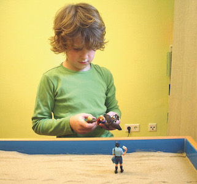
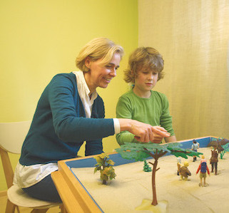
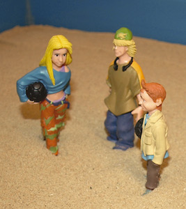
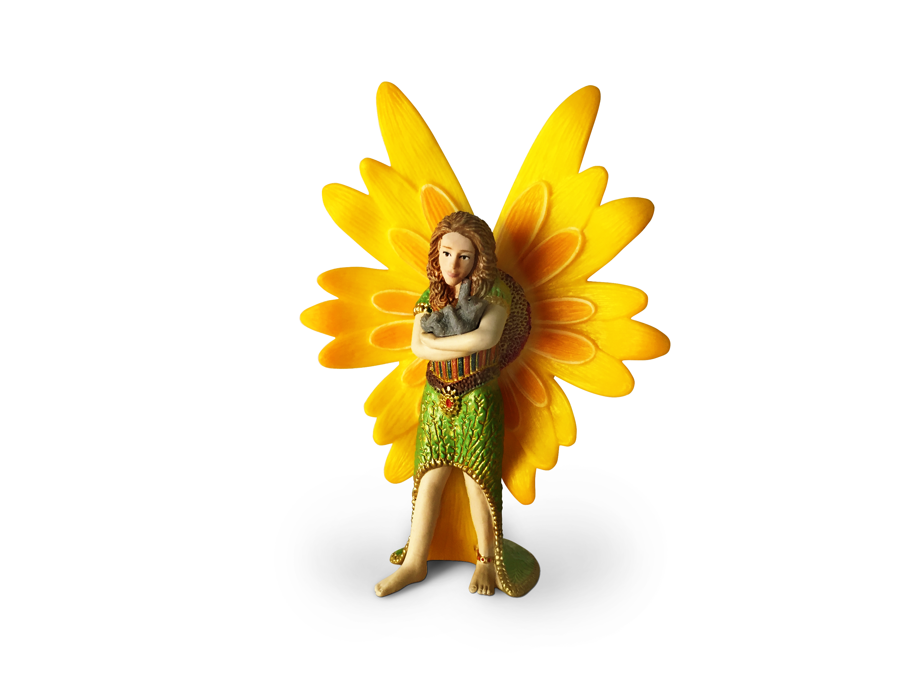

eines Kindes führt nicht darüber, ihm etwas beibringen zu wollen und dafür zu sorgen, dass es die Erwachsenen versteht, sondern das Kind zu verstehen und Teil seiner Welt zu werden.

Das Spiel ist die zentrale Tätigkeitsform des kindlichen Lebens. Spielzeit ist eine wichtige, lehrreiche, sinnvolle und höchst wertvolle Zeit - eine Zeit, um zu erleben, zu erkennen und neu zu begreifen. Ein Kind bringt im Spiel seine Individualität und Persönlichkeit zum Ausdruck. Durch das Spielen gestalten die Heranwachsenden ihre Wirklichkeit - direkt, unbefangen und unverfälscht. Im kreativen Spiel lernt der junge Mensch aus sich selbst zu schöpfen, sich und seine Umwelt neu zu begreifen und sich aus einer inneren Quelle heraus zu entfalten.

In einem geschützten Rahmen - frei von Erwartungen, Restriktionen und Leistungsanforderungen - lernen Kinder und Jugendliche mit sich, mit verschiedenen Materialien, unterschiedlichen Ausdrucksformen und mit vielfältigen Rollen zu experimentieren. Dadurch können sie sich mit Hilfe der Welt der Symbole und der Bilder in der aktiven Gestaltung und einem altersgerechten "Plaudern" neu erfahren. Kinder haben ihre eigene Sprache und ihre eigenen Weisen des Selbstausdrucks und müssen auch dort abgeholt werden.

Im kreativen künstlerischen Akt können sowohl die Themen, Probleme, Spannungen, Ängste und Konflikte der Kinder und Jugendlichen als auch ihre verborgenen Ressourcen, Sehnsüchte und Wünsche ausgedrückt und neu betrachtet werden. Hier kann sich z.B. zeigen, mit welchen inneren "Drachen" ein Kind kämpft und welche Figuren in diesem Konflikt auf welche Weise hilfreich sind. Eltern können dann in einem weiteren Schritt zur Stärkung des Familienverbundes in diesen Prozess involviert werden.

bietet darin einen freien und doch sicheren Raum, in dem sich die Ideen, Imaginationen und Fantasien kindgerecht ausdrücken können. Sand ist dabei ein Symbol für das Entstehen und die Veränderlichkeit der kindlichen Seele und stellt selbst eine Brücke zur Welt der Imagination dar. Wenn sich bereits im Sand bestimmte Bilder abzeichnen, dann verleiht das der Fantasie Flügel.
Erfahren Sie mehr über die Philosophie des Sandspiels